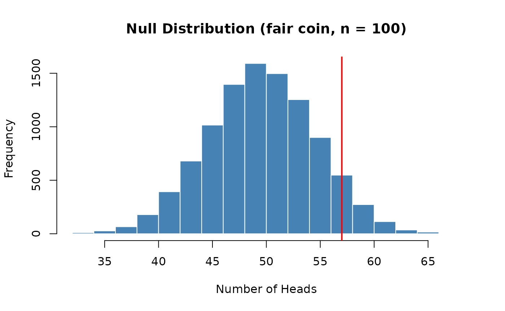
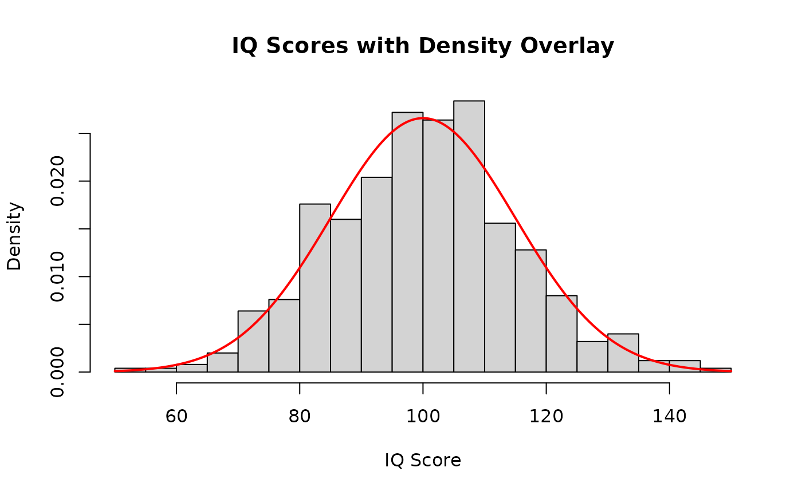
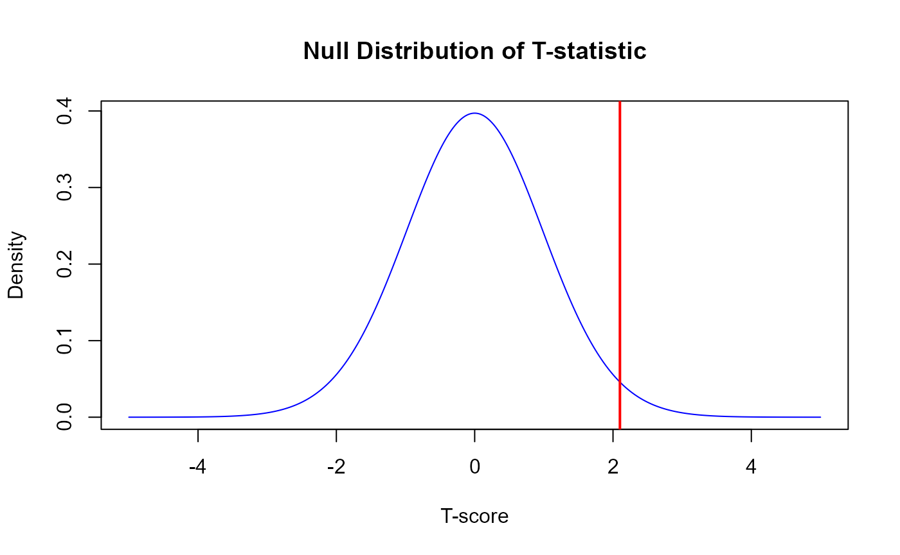
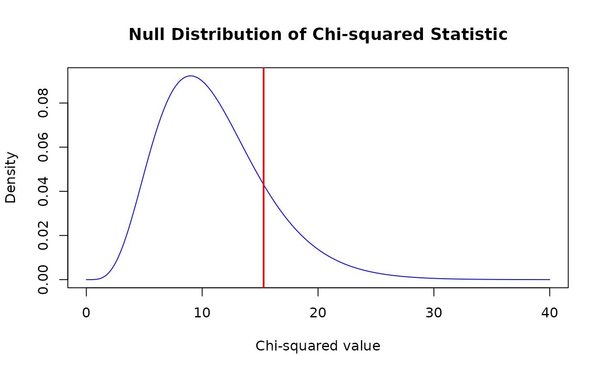
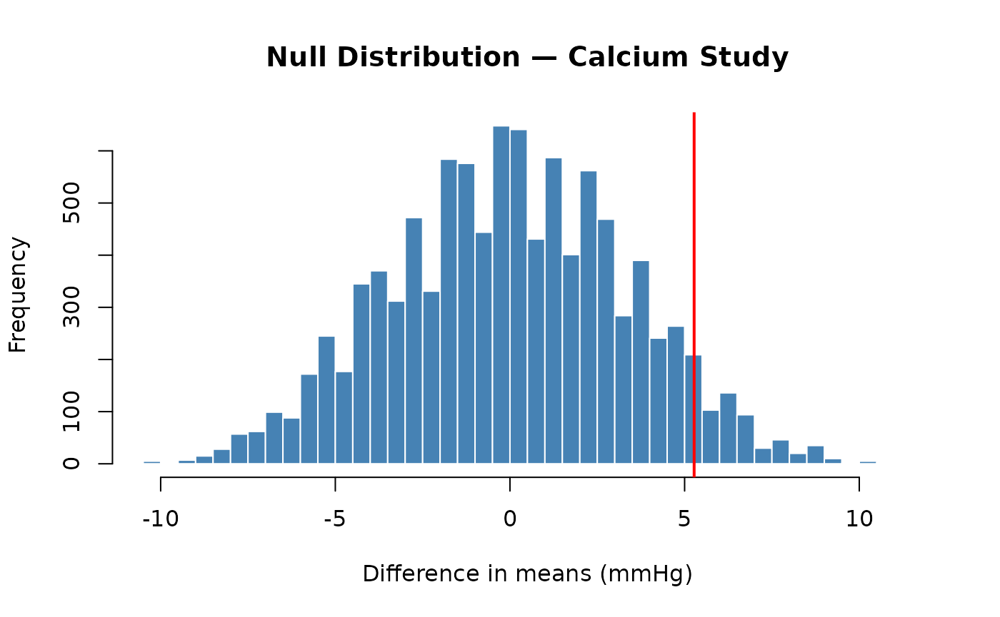
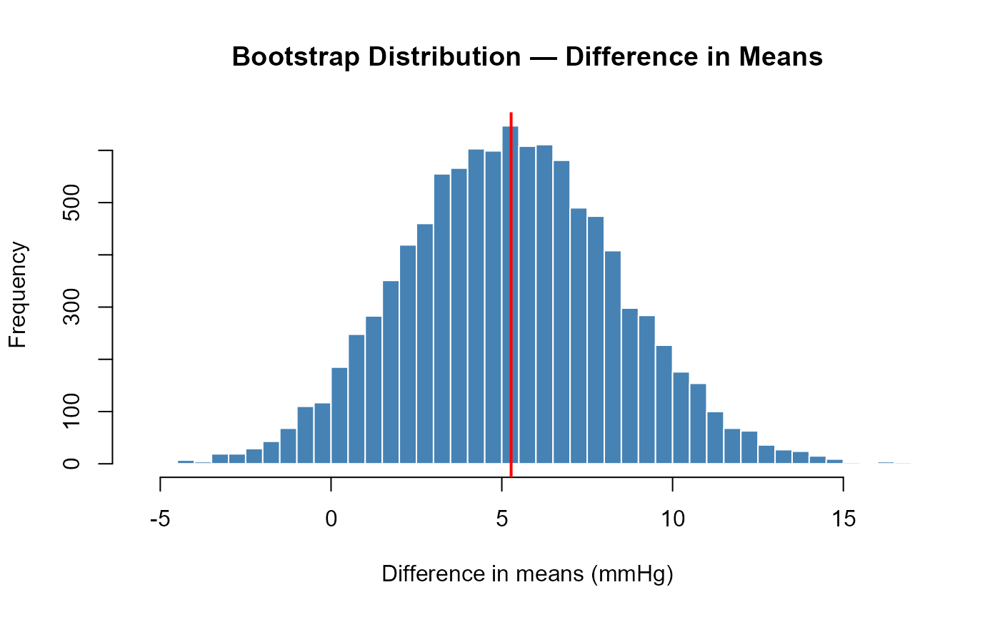

Transitioning to Base R: Inference and Visualization
transitioning-inference.RmdOverview
This is Part 2 of a two-part guide on transitioning from the SDS1000 package to base R. It covers the inference and visualization functions. If you haven’t read Part 1, start there.
In this article:
- Computing
a p-value —
ptail()→mean() - Finding
critical values —
cnorm()andct()→qnorm()andqt() - Plotting
distributions —
plot_norm()and friends - Putting it all together — a complete worked example
- Complete cheat sheet
Also in this series:
-
Part 1: Simulation and Data
Summaries —
do_it(),get_proportion(),rflip(),rroll(),shuffle(),resample_pairs() - Parametric Hypothesis Tests — t-tests, chi-squared, ANOVA, correlation, and regression
- Cheat Sheet — printable one-page summary
Computing a p-value: ptail() → mean() with
a logical comparison
What ptail() does
After building a null distribution with replicate(), the
last step of a hypothesis test is to compute a p-value: the proportion
of values in the null distribution that are as extreme or more
extreme than the observed statistic. In S&DS 1000, you used
ptail() for this:
ptail(obs_value, null_dist, lower.tail = TRUE)-
obs_value— the observed statistic from your real data -
null_dist— the null distribution (a vector of simulated statistics) -
lower.tail— ifTRUE(default), counts values ≤obs_value(left tail); ifFALSE, counts values ≥obs_value(right tail)
For example, to test whether Buzz could pick the correct food (15 correct out of 16):
# SDS1000 version — upper-tail p-value
p_value <- ptail(obs_stat, null_dist, lower.tail = FALSE)The base R equivalent: mean() with a logical
comparison
ptail() is just
sum(x >= obs) / length(x) under the hood. The
mean() trick - taking the mean of a logical vector — gives
the same result in one step:
A worked example
We can assess whether a coin is fair (i.e., lands heads 50% of the time) after flipping it 100 times and observing 57 heads using:
set.seed(4021)
obs_heads <- 57
null_distribution <- replicate(10000, {
rbinom(1, size = 100, prob = 0.5)
})
hist(null_distribution,
main = "Null Distribution (fair coin, n = 100)",
xlab = "Number of Heads",
col = "steelblue", border = "white")
abline(v = obs_heads, col = "red", lwd = 2)
p_value <- mean(null_distribution >= obs_heads)
p_value## [1] 0.0989Finding critical values: cnorm() and ct()
→ qnorm() and qt()
What these functions do
cnorm() and ct() return the critical value
z* or t* needed for a confidence interval at a given confidence level
C:
The base R equivalent: qnorm() and
qt()
For confidence level C, the upper critical value is at quantile
So a 95% CI uses the 97.5th percentile (2.5% in each tail):
# cnorm(0.95) — base R equivalent
qnorm(0.975) # = qnorm(1 - (1 - 0.95) / 2)## [1] 1.959964
# ct(0.95, df = 15) — base R equivalent
qt(0.975, df = 15)## [1] 2.13145Common critical values to know:
| Confidence level |
qnorm() call |
z* |
|---|---|---|
| 90% | qnorm(0.95) |
≈ 1.645 |
| 95% | qnorm(0.975) |
≈ 1.960 |
| 99% | qnorm(0.995) |
≈ 2.576 |
Using qnorm() and qt() in confidence
intervals
Bootstrap CI with normal critical value (class 11 style):
set.seed(2251)
# generate simulated (fake) data
body_temps <- rnorm(50, mean = 98.25, sd = 0.73)
obs_mean <- mean(body_temps)
boot_dist <- replicate(10000,
mean(sample(body_temps, length(body_temps), replace = TRUE)))
SE_boot <- sd(boot_dist)
z_star <- qnorm(0.975) # was: cnorm(0.95)
ci_95 <- c(obs_mean - z_star * SE_boot, obs_mean + z_star * SE_boot)
ci_95## [1] 98.06333 98.51613Theory-based t CI (class 21 style):
# observed data
n <- 55
xbar <- 7.0
s <- 1.2
SE <- s / sqrt(n); df <- n - 1
t_star <- qt(0.975, df = df) # was: ct(0.95, df)
ci <- c(xbar - t_star * SE, xbar + t_star * SE)
ci## [1] 6.675595 7.324405Plotting distributions: plot_norm() and friends →
dnorm() and friends
In base R, theoretical distributions are plotted using three steps:
create x values with seq(), evaluate the density function,
then call plot() with type = "l". The class
code uses this pattern from class 19 onwards.
The general pattern:
x <- seq(lower, upper, length.out = 1000)
dens <- d___(x, ...)
plot(x, dens, type = "l",
main = "...", xlab = "...", ylab = "Density")
abline(v = obs_stat, col = "red", lwd = 2) # mark the observed statisticNormal distribution (plot_norm() →
dnorm())
From class 19 — the distribution of IQ scores:
x <- seq(50, 150, length.out = 1000)
dens <- dnorm(x, mean = 100, sd = 15)
plot(x, dens, type = "l",
main = "Distribution of IQ Scores",
xlab = "IQ Score", ylab = "Density")To overlay a density curve on a histogram, use
probability = TRUE in hist() and then
lines():
# generate random (fake) data
iq_scores <- rnorm(500, mean = 100, sd = 15)
hist(iq_scores, probability = TRUE, breaks = 30,
main = "IQ Scores with Density Overlay", xlab = "IQ Score")
lines(x, dens, col = "red", lwd = 2)
t-distribution (plot_t() → dt())
From class 21 and 22 — marking an observed t-statistic:
df <- 54
t_stat <- 2.1
x <- seq(-5, 5, length.out = 1000)
dens <- dt(x, df = df)
plot(x, dens, type = "l", col = "blue",
main = "Null Distribution of T-statistic",
xlab = "T-score", ylab = "Density")
abline(v = t_stat, col = "red", lwd = 2)
pt(t_stat, df = df, lower.tail = FALSE) # p-value## [1] 0.02020777Chi-squared distribution (plot_chisq() →
dchisq())
From class 23 and 24:
df <- 11; chi_sq_stat <- 15.3
x <- seq(0, 40, length.out = 1000)
dens <- dchisq(x, df = df)
plot(x, dens, type = "l", col = "blue",
main = "Null Distribution of Chi-squared Statistic",
xlab = "Chi-squared value", ylab = "Density")
abline(v = chi_sq_stat, col = "red", lwd = 2)
pchisq(chi_sq_stat, df = df, lower.tail = FALSE) # p-value## [1] 0.1691706Quick reference
| Distribution | Density function | p-value function | SDS1000 plot |
|---|---|---|---|
| Normal | dnorm(x, mean, sd) |
pnorm() |
plot_norm() |
| t | dt(x, df) |
pt() |
plot_t() |
| Chi-squared | dchisq(x, df) |
pchisq() |
plot_chisq() |
| F | df(x, df1, df2) |
pf() |
plot_f() |
Putting it all together
A complete, base-R-only analysis using the calcium supplement study from the class 17 notes. Lyle et al. (1987) randomly assigned men to a treatment group (calcium supplement, n = 10) or a control group (placebo, n = 11) for 12 weeks. The outcome is the decrease in blood pressure.
Step 1: Data and observed statistic
treat <- c(7, -4, 18, 17, -3, -5, 1, 10, 11, -2)
control <- c(-1, 12, -1, -3, 3, -5, 5, 2, -11, -1, -3)
obs_stat <- mean(treat) - mean(control)
obs_stat## [1] 5.272727Step 2: Permutation test
| SDS1000 | Base R |
|---|---|
do_it(10000) * { ... } |
replicate(10000, { ... }) |
shuffle(combined_data) |
sample(combined_data) |
pnull(obs, null, lower.tail = FALSE) |
mean(null >= obs) |
set.seed(6174)
combined_data <- c(treat, control)
null_dist <- replicate(10000, {
shuff <- sample(combined_data)
mean(shuff[1:10]) - mean(shuff[11:21])
})
hist(null_dist, breaks = 60,
main = "Null Distribution — Calcium Study",
xlab = "Difference in means (mmHg)",
col = "steelblue", border = "white")
abline(v = obs_stat, col = "red", lwd = 2)
p_value <- mean(null_dist >= obs_stat)
p_value## [1] 0.0605The p-value is just above 0.05: suggestive, but not conclusive at α = 0.05.
Step 3: Bootstrap confidence interval
| SDS1000 | Base R |
|---|---|
do_it(10000) * { ... } |
replicate(10000, { ... }) |
cnorm(0.95) |
qnorm(0.975) |
set.seed(6174)
boot_dist <- replicate(10000, {
mean(sample(treat, replace = TRUE)) -
mean(sample(control, replace = TRUE))
})
hist(boot_dist, breaks = 60,
main = "Bootstrap Distribution — Difference in Means",
xlab = "Difference in means (mmHg)",
col = "steelblue", border = "white")
abline(v = obs_stat, col = "red", lwd = 2)
Method 1 — SE-based CI (uses qnorm(),
as in class 11):
SE_boot <- sd(boot_dist)
z_star <- qnorm(0.975) # was: cnorm(0.95)
ci_se <- c(obs_stat - z_star * SE_boot,
obs_stat + z_star * SE_boot)
ci_se## [1] -0.8691632 11.4146178Method 2 — Percentile CI (no normality assumption):
## 2.5% 97.5%
## -0.6636364 11.5181818Both intervals include zero, consistent with the hypothesis test, but extend well above zero — a meaningful treatment effect remains plausible.
Complete SDS1000 → Base R cheat sheet
All substitutions covered across both parts of this guide. See also the printable cheat sheet.
| Task | SDS1000 | Base R |
|---|---|---|
| Repeat a process n times | do_it(n) * { expr } |
replicate(n, { expr }) |
| Proportion of one category | get_proportion(v, "cat") |
mean(v == "cat") |
| Proportions of all categories | — | prop.table(table(v)) |
| Randomly permute a vector | shuffle(v) |
sample(v) |
| Upper-tail p-value | ptail(obs, null, lower.tail = FALSE) |
mean(null >= obs) |
| Lower-tail p-value | ptail(obs, null, lower.tail = TRUE) |
mean(null <= obs) |
| Bootstrap resample (paired) | resample_pairs(v1, v2) |
idx <- sample(n, replace=TRUE); v1[idx]; v2[idx] |
| Bootstrap resample (independent) | — | sample(v, length(v), replace = TRUE) |
| Normal critical value for C% CI | cnorm(C) |
qnorm(1 - (1 - C) / 2) |
| t critical value for C% CI | ct(C, df) |
qt(1 - (1 - C) / 2, df = df) |
| Count of heads from n flips | rflip(n, prob) |
rbinom(1, size = n, prob = prob) |
| Counts for each die face | rroll(n, prob) |
as.vector(rmultinom(1, size = n, prob = prob)) |
| Plot a normal density curve | plot_norm(mean, sd) |
plot(x, dnorm(x, mean, sd), type = "l") |
| Plot a t density curve | plot_t(df) |
plot(x, dt(x, df), type = "l") |
| Plot a chi-squared density curve | plot_chisq(df) |
plot(x, dchisq(x, df), type = "l") |